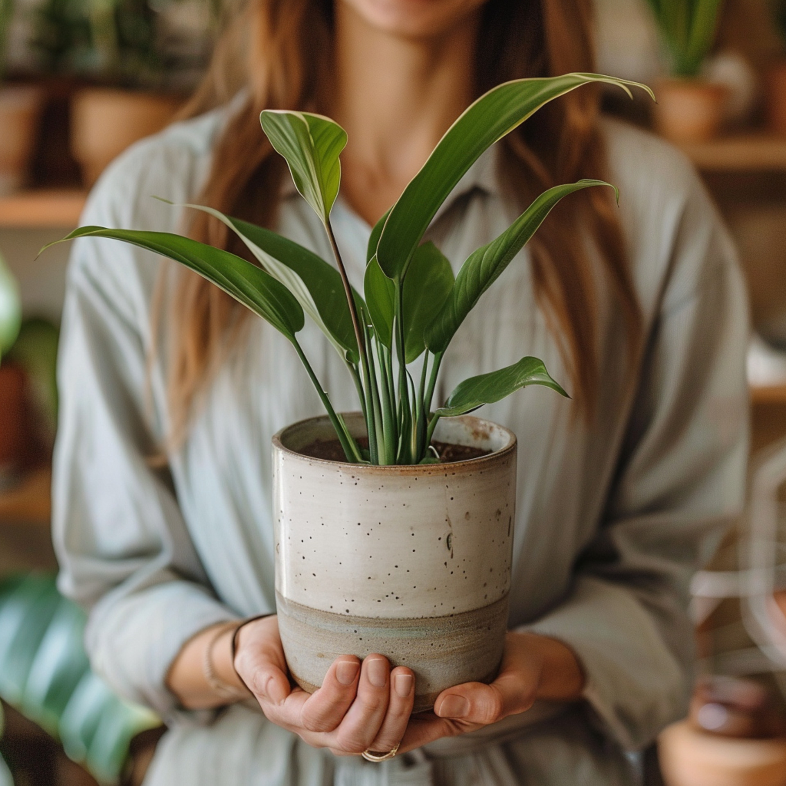

História
Fundada em 2000, a VistaVerde começou como um pequeno viveiro local. Hoje, somos líderes no mercado de plantas ornamentais, com clientes em todo o país.
Missão
Nossa missão é enriquecer a vida das pessoas, trazendo elementos naturais para mais perto delas, através de produtos de alta qualidade e serviços excepcionais.

Valores
Comprometimento com a sustentabilidade, paixão pela beleza natural e excelência no atendimento ao cliente são os pilares que nos guiam.